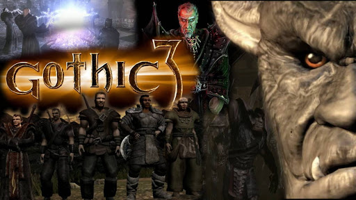

Gothic 3
Gothic 3 - fabularna gra akcji, bezpośrednia kontynuacja pierwszej i drugiej części serii Gothic, stworzona przez Piranha Bytes i wydana przez JoWooD Entertainment w 2006 roku. Marketing serii na anglojęzycznych rynkach, a przede wszystkim w Stanach Zjednoczonych, był niewielki. Miała to jednak odmienić część trzecia, której kampania reklamowa ma znacznie szerszy zasięg.
Fabuła
Fabuła gry jest bezpośrednią kontynuacją wydarzeń z Gothic II. Większość świata od pierwszej minuty jest dostępna dla gracza.
Po opuszczeniu Khorinis i pokonaniu smoka-ożywieńca Bezimienny wraz z załogą statku ląduje na Myrtanie w pobliżu wioski Ardea. Miejscowość jest zajęta przez orków, z którymi ludność toczy walkę. Bezimienny przyłącza się do rebelii w Ardei. Po pomyślnym ukończeniu tego questu bohater dowiaduje się, że kraina jest kontrolowana przez orków i ich ludzkich najemników. Opór stawiają jedynie buntownicy, przebywający w ukryciu i mający swoich zwolenników wśród niewolników orków. Nie mają pomocy ze strony króla Rhobara II i jego oddziałów. Władca przebywa w stolicy, Vengardzie, która jest otoczona magiczną barierą i mieszkańcy Myrtany nie wiedzą, czy monarcha żyje.
Los Bezimiennego jest niezapisany, to on podejmuje decyzję, po której stronie opowie się w trwającym konflikcie. W grze toczy się wojna pomiędzy bogami Innosem i Beliarem. Jeżeli Bezimienny wybierze drogę boga ognia i sprawiedliwości, Innosa, przyłącza się do buntowników. Opowiedzenie się po stronie Beliara, boga wojny i ciemności, oznacza przyłączenie do frakcji asasynów. Wybranie drogi Adanosa, boga wody i równowagi, wyrównuje szanse w wojnie pomiędzy Innosem a Beliarem i ustanawia pokój na przyszłe tysiąclecie, niszcząc tym samym moce walczących bogów. Aby zapewnić zwycięstwo jednej ze stron, Bezimienny powinien odnaleźć pięć artefaktów Adanosa: szatę, dwa pierścienie, amulet i koronę. To zadanie mogą zlecić bohaterowi ziemscy przedstawiciele bogów w Myrthanie: Rhobar II (Innos), Zuben (Beliar) i Xardas (czarny mag, zwolennik pokoju).
Gra kończy się, gdy gracz opowie się po jednej ze stron. W przypadku, gdy opowie się za Beliarem i zabije Rhobara II, Zubena, Xardasa oraz wszystkich orkowych przywódców, zostanie nowym królem Myrthany. Przywróci władzę Rhobarowi II i uwolni Myrtanę spod władzy orków, jeżeli opowie się po stronie Innosa. W trzecim przypadku, jeżeli zniszczy artefakty w nordmarskim piecu do wytopu rudy i zabije boskie pierwiastki Innosa i Beliara na Ziemi, tj. Rhobara II i Zubena, odejdzie z Xardasem do Niezbadanych Krain.
Frakcje
W odróżnieniu od poprzednich części gry, w Gothic 3 nie ma obowiązku przyłączania się do żadnego ugrupowania. Bezimienny może wykonywać zadania dla wszystkich gildii jednocześnie. W grze występuje sześć głównych frakcji i cztery poboczne:
Gildie główne:
Asasyni zamieszkują miasta pustyni Varant. Stolicą ich państwa jest Ishtar, gdzie znajduje się pałac ich władcy Zubena. Duchowymi przywódcami asasynów są czarni magowie, kapłani Beliara, przebywający w Bakaresh. Asasyni posiadają umiejętność walki dwoma ostrzami. Walczą na każdej arenie i zajmują się (głównie w Myrtanie) chwytaniem zbiegłych niewolników. Ich głównym zajęciem jest handel (w tym niewolnikami). Kolaborują z orkami i za wysoką opłatą pozwalają im prowadzić wykopaliska w świątyniach pradawnych, gdzie zgodnie z legendami zostały umieszczone boskie artefakty. Głównymi przeciwnikami asasynów są koczownicy.
Buntownicy są rojalistami. Nie godzą się z władzą orków w Myrtanie i walczą przeciwko nim w imieniu swojego przywódcy – króla Rhobara II. Ukrywają się w leśnych obozach, jaskiniach i opuszczonych kopalniach. Do większych obozów buntowników należą Reddock, Okara i Nemora. Planują odbicie miast spod władzy orków. W tym celu wysyłają do wrogich obozów szpiegów.
Gońcy leśni bronią natury i swoich przywódców – druidów. Nie angażują się w konflikt między ludźmi i orkami, walczą z ostatnimi wtedy, gdy im zagrażają. Na czele poszczególnych grup gońców leśnych Myrtany stoją druidzi: Torn, Runak i Porgan. Druid Bogir przebywa w Klanie Wilka w Nordmarze, natomiast koczownik i zarazem druid Shaykor Lew Pustyni w towarzystwie oswojonego lwa znajduje się na pustyni Varant w pobliżu nadmorskiego miasta Lago.
Koczownicy są sprzymierzeńcami buntowników z Myrtany. Przewodzą im magowie wody. Pochodzą z Varantu, dzielą się na plemiona. Przebywają w grotach, na bezdrożach pustyni lub oazach. Nie uznają władzy asasynów, których uważają za najeźdźców. Napadają na ich karawany kupieckie i planują odbicie Varantu.
Najemnicy służą i podlegają orkom. Nie mają głównego przywódcy. W ich szeregach znajdują się zdrajcy, bandyci, wojownicy, recydywiści lub byli obrońcy miast Rhobara II, pragnący ocalić swoje życie. Wykonują dla orków podrzędne zadania, odpowiadają za porządek w miastach.
Nordmarczycy zamieszkują północną krainę wiecznego lodu – Nordmar. Jako pierwsi byli narażeni na ekspansję orków z północy. Nie zostali całkowicie podporządkowani, niemniej świadomi są faktu, że orkowie rządzą w ich krainie. Nordmarczycy są podzieleni na trzy klany. Klan Wilka zrzesza najlepszych myśliwych, wśród których najbieglejsi posiadają moc przemiany w zwierzę. Do Klanu Młota przynależą najlepsi kowale, posiadający sekret wytwarzania broni z magicznej rudy. W Klanie Ognia przebywają najsilniejsi zabójcy orków. Przywódcą Nordmarczyków jest Kerth z Klanu Ognia.
Gildie poboczne:
Magowie ognia należeli do najpotężniejszych ugrupowań ludzkich, ponieważ znali tajniki magii Innosa. Byli podporą duchową dla paladynów w walce z orkami. Po tym, jak Xardas unicestwił magię runiczną, stracili swoją potęgę. Przywódcą magów jest Karrypto, przybywający w Vengardzie. Przedstawiciele magów ognia są obecni także w obozach buntowników, większa grupa przebywa także w klasztorze w Nordmarze. Magowie ognia poszukują wiedzy o boskich mocach i dążą do przywrócenia paladynom ich magii. Zgłębiają wiedzę pradawnych, która pozwoliłaby im na rzucanie zaklęć bez użycia run.
Magowie wody są kapłanami Adanosa. Przewodzi im Saturas. Według legend magowie wody są dziedzicami Varantu. Wspierają duchowo koczowników i nie akceptują władzy orków i asasynów. Magowie Wody są badaczami pradawnych świątyń Varantu. W całej grze występują następujący magowie wody: Cronos, Merdarion, Myxir, Nefarius, Saturas, Riordian, Vatras.
Niewolnicy to mieszkańcy podbitych przez orków miast. Wykonują dla nich najcięższe prace: sprzątają, rąbią drewno, wydobywają minerały itd. Zatrudnieni są także przy orkowych pracach wykopaliskowych. Są przestraszeni i marzą o wolności. Pokładają nadzieję w uwolnienie przez buntowników.
Orkowie są wrogami ludzi. Ich przywódcą jest herszt Kan, przebywający na zamku Faring. Orkowie pochodzą z północnego Nordmaru, skąd rozpoczęli swą ekspansję na południe. Pokonali Myrtanę po wielu latach zaciekłych walk dzięki Xardasowi, który unicestwił magię runiczną paladynów. Orkowie są dobrymi wojownikami, stawiającymi na pierwszym miejscu honor i waleczność, oraz myśliwymi. Można ich spotkać zarówno w Nordmarze, gdzie strzegą strategicznych punktów komunikacyjnych oraz wielkiej kopalni, należącej niegdyś do Klanu Młota, jak i na pustyni Varant, gdzie prowadzą wykopaliska w świątyniach pradawnych.
Wysoki poziom reputacji – 75% – pozwala na rozmowę z dowódcą garnizonu (w przypadku miast/wiosek opanowanych przez orków lub asasynów) oraz handel potężniejszymi przedmiotami (25% lub 50%) (np. zbroja paladyna, nordmarczyka itp; w przypadku reputacji ogólnej). Gracz może się podjąć wykonania ogromnej ilości misji – zadań pobocznych i głównych (jest ich wszystkich około 1000).
Świat gry
Akcja gry toczy się na kontynencie Myrtana, podzielonym na krainy i prowincje. Ziemie centralne i północne są okupowane przez orków, południowymi władają asasyni. Niezdobyta pozostaje otoczona magiczną barierą królewska stolica – Vengard.
Umiejętności bohatera
Umiejętności bohatera zostały rozbudowane w stosunku do poprzednich części gry. Bohater ma możliwość między innymi nauczenia się odporności na ataki magiczne oraz opanowania takich umiejętności, jak ogłuszanie przeciwnika. Tak jak w poprzednich częściach gry Bezimienny uczy się posługiwania broniami białymi i czarami. Nauka odbywa się na podobnych zasadach co w poprzednich częściach gier z serii Gothic. Dużą różnicą w stosunku do poprzednich części gry jest to, że gracz nie ma możliwość nauki zaklęć runicznych, co związane jest z fabułą gry. Magia jest teoretycznie dostępna od samego początku. Wcześniej gracz musiał wykonań szereg zadań, by jego postać stała się adeptem tejże umiejętności.
Broń i rozwój bohatera
W Gothic 3 ulepszono i posegregowano ekwipunek Bezimiennego bohatera. Obecnie gracz nie musi długo szukać potrzebnych przedmiotów – wystarczy kliknąć odpowiednią kategorię (bronie, pancerze, obiekty magiczne, jedzenie, inne) i zabrać dany przedmiot.
W grze występuje kilkadziesiąt różnych broni do walki wręcz i na dystans. Gracz ma do dyspozycji miecze, topory i bronie obuchowe. Tak jak w poprzednich częściach gry, Bezimienny ma możliwość używania broni orków. W Gothic 3 pojawiły się włócznie i halabardy. Zdobywanie broni odbywa się na takich samych zasadach co w poprzednich częściach gry, czy poprzez odnajdywanie skarbów (skrzynie, kufry), zabijanie istot (ludzie i orkowe), oraz handel. Ponadto w Gothic 3 rozwinięto koncepcję kowalstwa. Gracz ma możliwość używania w końcowych etapach gry potężnych mieczy jak np. „Miecz przodków” W grze nie ma jednak broni czysto magicznych jak znany z Noc Kruka „Szpon Beliara”, aczkolwiek istnieje możliwość użycia „miecza ognistego” dzięki odpowiedniemu zaklęciu.
